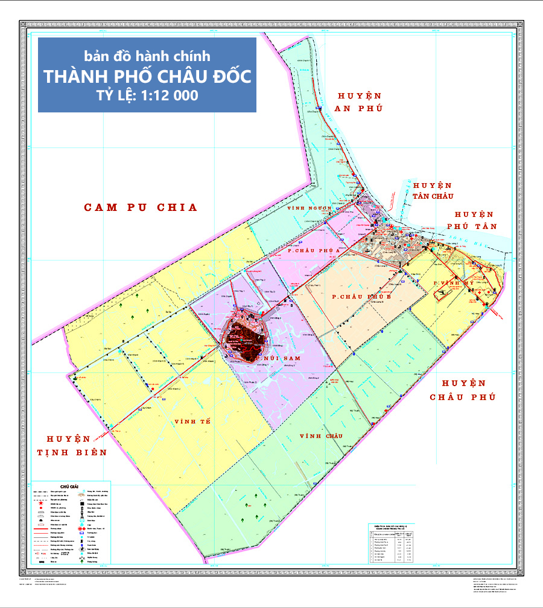

CHÂU ĐỐC

Châu Đốc là thành phố biên cương, diện tích tự nhiên 104,7 km2 nằm ở phía Tây Nam Tổ quốc. Bắc giáp huyện An Phú, Tây Bắc giáp Campuchia, phía Nam giáp huyện Châu Phú, Tây giáp huyện Tịnh biên và Đông giáp huyện Phú Tân.
Với số dân hiện nay trên 119 ngàn người và đông đảo khách vãng lai, du lịch. Thành phố Châu Đốc là nơi sinh hoạt nhộn nhịp, mua bán sung túc, sông ngòi nhiều cá tôm, đồng ruộng phì nhiêu, đất đai màu mỡ. Châu Đốc xưa kia là tỉnh lỵ, ngày nay là thành phố trực thuộc tỉnh An Giang, là đô thị loại II, gồm có 05 phường: Châu phú A, Châu phú B, Núi sam, Vĩnh mỹ, Vĩnh Ngươn và 02 xã: Vĩnh Tế, Vĩnh Châu. Thành phố Châu Đốc nằm bên ngã ba sông thơ mộng, nhìn sang Cồn Tiên và xóm Châu Giang xanh rờn cây trái. Trước mặt thành phố là giao điểm của sông Châu Đốc và sông Hậu. Sau lưng là dãy Thất Sơn hùng vĩ. Đặc thù của Châu Đốc là trung tâm du lịch nổi tiếng của tỉnh An Giang cũng như vùng Đồng bằng sông Cửu Long. Châu Đốc có khu danh thắng Núi Sam với nhiều di tích văn hoá được xếp hạng cấp Quốc gia, trong đó có Miếu Bà Chúa Xứ nổi tiếng cả nước. Châu Đốc có chiều dài lịch sử gắn liền với những sự kiện trong công cuộc gìn giữ đất nước nhất là sự kiện Thoại Ngọc Hầu huy động sức dân đào kênh Vĩnh Tế, vừa phục vụ công tác thuỷ lợi, vừa có ý nghĩa về mặt quân sự và phát triển du lịch…
Sau nhiều năm xây dựng, thành phố Châu Đốc ngày nay thật sự chuyển biến, xanh - sạch - đẹp hơn; người dân Châu Đốc hiền hoà, vui tính; đất và người Châu Đốc luôn chào đón mọi người, tạo mọi cơ hội tốt nhất để sống tốt, vui chơi, thân thiện, an toàn, phát triển.
Nguồn: Ban Biên Tập Cổng Thông tin Điện tử thành phố Châu Đốc